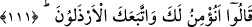
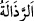
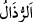
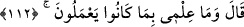

beklemeyi terk etmekten her birinin Allah’tan korkmayı (takvâ) ve tâati gerektirme
konusunda müstakil olduğuna dikkat çekmek içindir. İkisi bir şahısta toplandığında
durum nasıl olur düşünmek gerekir.
111. Onlar şöyle cevap verdiler: Sana düşük seviyeli kimseler tâbi olup dururken,
biz sana iman eder miyiz hiç!
“Onlar” yâni Nuh (a.s.)’ın kavmi “şöyle cevap verdiler: Sana düşük seviyeli
kimseler tâbi olup dururken,” yâni mevkisi en düşük/insanlar katında değeri ve malı en
az olan kimseler sana tabi olmuş durumdayken, yani senin durumun bu iken “biz sana
iman eder miyiz hiç!” Bu soru inkar/reddetmek içindir. Yani sana iman etmeyiz,
demektir. Nitekim “Sefil kimseler seninle beraber olduğu halde biz seninle beraber
olmayız.” derler.
“__WORD__ bayağılık ve aşağılık olmaktır. “__WORD__ aşağı ve bayağılığından dolayı
kendisinden yüz çevrilen şeye denir.
Onlar bu sözleriyle, o kimselerin olayları tartacak bir akla ve isabetli görüşe sahip
olmadıklarını, tâbi olmalarının basit görüşle hareket etmekten ileri geldiğini,
dolayısıyla sana tâbi olmalarının önemli/dikkate değer olmadığını kastediyorlar.
Münkirlerin bu sözleri, akıllarının ne kadar kıt, dünyaya bakışlarının ne kadar basit
olduğunu gösterir. Onlara göre en şerefli kimse, dünyadan nasibi ve malı en fazla olan
kimsedir. Düşük seviyeli kimse ise bunlardan mahrum olandır. Onlar dünyanın Allah
katında sineğin kanadı kadar değeri olmadığını, gerçek nimetin âhiret nimeti olduğunu,
en şerefli kimsenin bu nimete kavuşan, en değersiz kimsenin de ondan mahrum kalan
kimse olduğunu bilemediler.
İşte Kureyş de Rasûlullah (s.a.)’in ashabı için böyle söylüyorlardı. Peygamberlerin
tâbîleri hep zayıf kimseler olagelmiştir. Sen evliyânın peygamberlerin dâvetlerine,
ilimlerine, zevklerine, mihnetlerine ve sıkıntılarına vâris olmaları bakımından evliyaya
tâbi olanları peygamberlere tâbi olanlara kıyas et. Çünkü hakîkat makam ve servet
sâhiplerinde ancak nâdir görülür.
Büyüklük ve ululuk içinde büyüklük düşüncesi olmayan baştadır.
112. Nûh dedi ki: Ben onların yaptıklarını(n iç yüzünü) bilmem.
“Nûh” inkârcıların, kendisine iman eden düşük seviyeli kimselerin düşünce ve
basiret ile îman etmediklerine işâret eden sözlerine cevap olarak “dedi ki: Ben onların